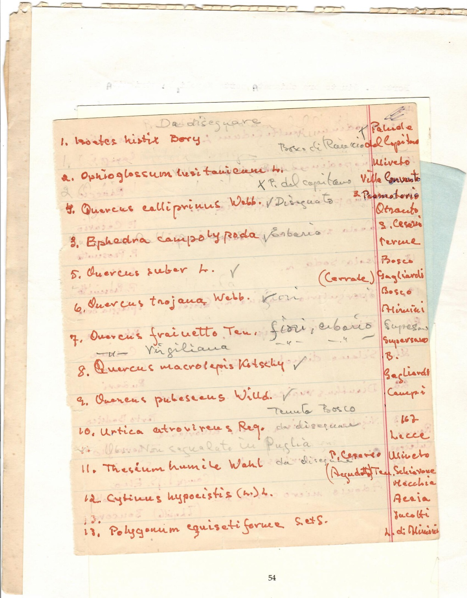
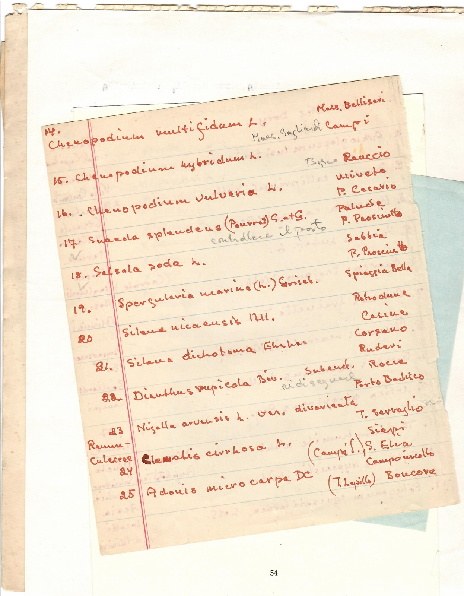

“Da disegnare”
- Categoria
- Appunti
- Fogli
- 2
Foglio 1 di 2

[elenco in inchiostro rosso, note a matita] Da disegnare 1. Isoetes histrix Bory — Bosco di Rauccio / † Palude del Capitano 2. Ophioglossum lusitanicum L. — × P. del capitano 4. Quercus calliprinus Webb. — ✓ Disegnato 3. Ephedra campylopoda — ✓ erbario 5. Quercus suber L. — ✓ (Cerrate) 6. Quercus trojana Webb. — fiori 7. Quercus frainetto Ten. — fiori, erbario; Virgiliana 8. Quercus macrolepis Kotschy ✓ 9. Quercus pubescens Willd. ✓ Tenuta Bosco 10. Urtica atrovirens Req. — da disegnare; Obs. Non segnalata in Puglia 11. Thesium humile Wahl — da disegnare, P. Cesareo (Acquedotto) 12. Cytinus hypocistis (L.) L. 13. Polygonum equisetiforme S. et S. [colonna dei luoghi a destra: Palude del Capitano, Uliveto, Villa Convento, 3. Promontorio Otranto, S. Cesarea terme, Bosco Gagliardi, Bosco Alimini, Supersano, B. Gagliardi, Campi, 167 Lecce, Uliveto Ten. Schiavone, Macchia Acaia, Incolti, L. di Alimini]
Foglio 2 di 2

[foglio rigato in inchiostro rosso, note a matita; numero della pagina d'album: 54. I luoghi stanno nella colonna di destra: l'abbinamento alle righe è approssimativo] 14. Chenopodium multifidum L. — Mass. Bellisari [a matita: Mass. Gagliardi Campi] 15. Chenopodium hybridum L. — [a matita: Bosco] Rauccio 16. Chenopodium vulvaria L. — Uliveto 17. Suaeda splendens (Pourret) G. et G. — P. Cesario, Palude [a matita: controllare il posto] 18. ✓ Salsola soda L. — P. Prosciutto, Sabbia 19. ✓ Spergularia marina (L.) Griseb. — P. Prosciutto, Spiaggia Bella 20. Silene nicaeensis All. — Retrodune, Cesine 21. Silene dichotoma Ehrh. — Corsano, Ruderi 22. Dianthus rupicola Biv. — Subend. [?], Rocce, Porto Badisco [a matita: ridisegnare] 23. Nigella arvensis L. var. divaricata — T. Serraglio 24. [a sinistra: Ranunculaceae] Clematis cirrhosa L. — Siepi, S. Elia (Campi S.) 25. Adonis microcarpa DC — Campoincolto [?], (T. Lupillo [?]) Boncore
Documentazione digitale
Documentazione e codifica dell'ITEM: